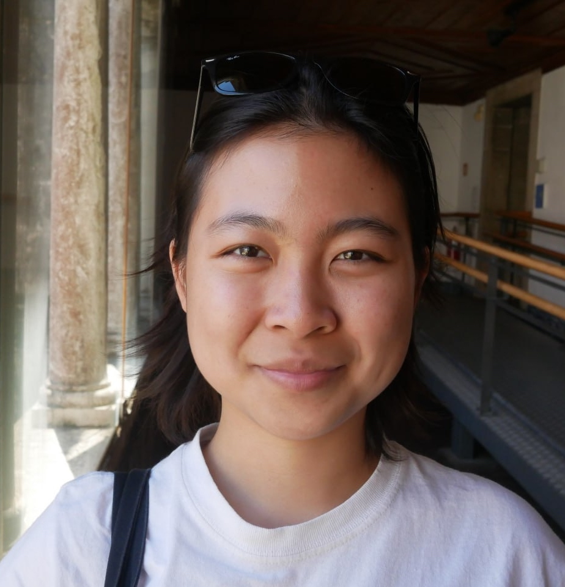

Nicole Yow Wei
Third-year PhD Student in History and Early Modern Studies at Yale University
Email: nicole (dot) yow (at) yale (dot) edu

I am a Ph.D. student in History and Early Modern Studies interested primarily in the intellectual history of Southeast Asia and the Indian Ocean; defined more pointedly as the historical inquiry of ideas, and of the epistemological and social orientations of thinking. These broad conceptual interests have led me to bring methods in book history and social history to bear on the study of Malay and Islamicate world texts. I grew up in Singapore, and subsequently earned an A.B. in History from Brown University, as well as an M.A. in Southeast Asian Studies from Chulalongkorn University.
Publications:
Yow, Nicole. “Unreading the Literary: The Hikayat Anggun Cik Tunggal and Malay Historical Tradition in an Age of Print.” (forthcoming in the Journal of Southeast Asian Studies)
de Langis, Theresa, Nicole Yow Wei, Tara Tran, and Cindy Anh Nguyen. "Feminist Trouble in Southeast Asia: An Invitation." Verge: Studies in Global Asias 11, no. 1 (2025): 105-130. [link here]
+++
You can see my CV here.
My Yale History department website is accessible here.
The following things currently occupy my waking mind:
Translations (PDF uploads in progress)
Translations-in-progress
If any of the above resonates with the interests that you have, please do not hesitate to email me!